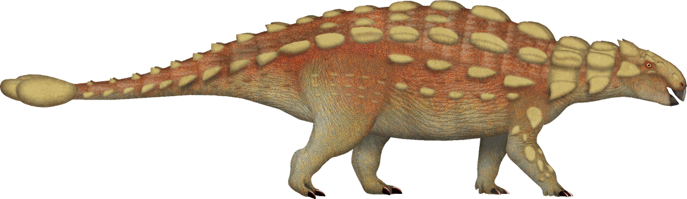
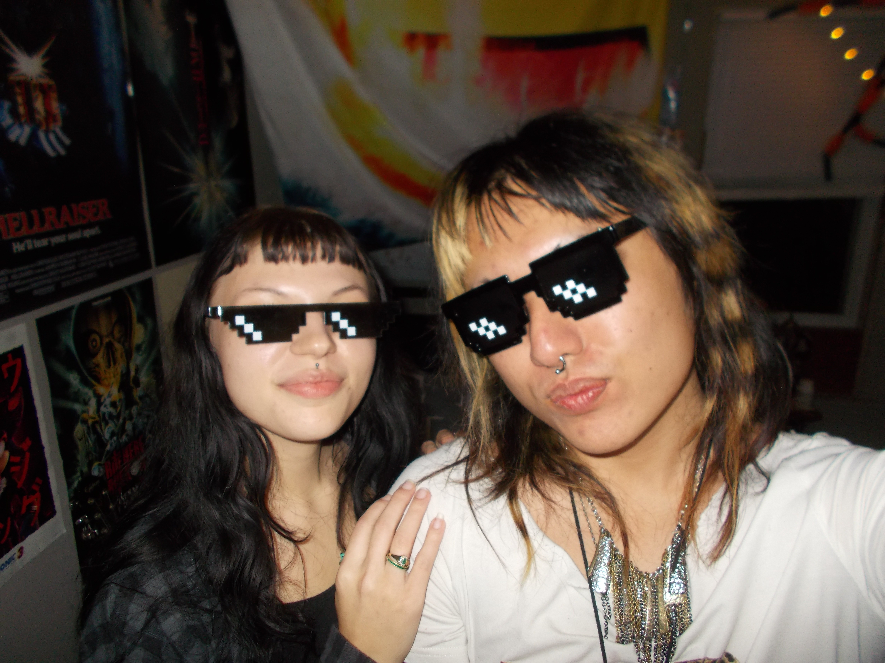
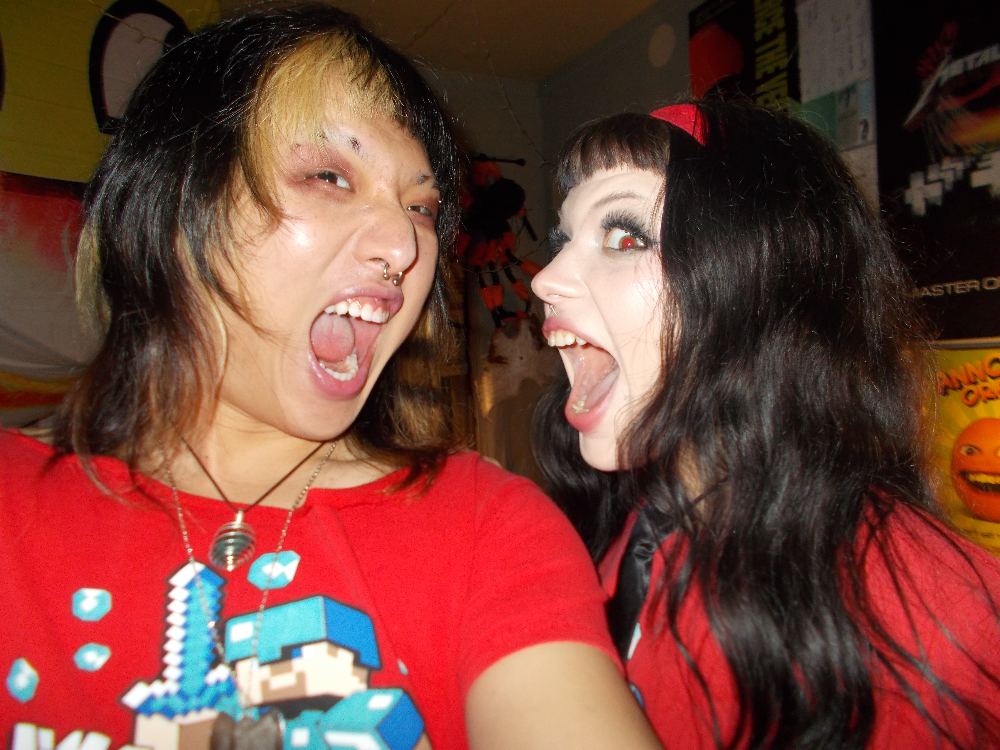
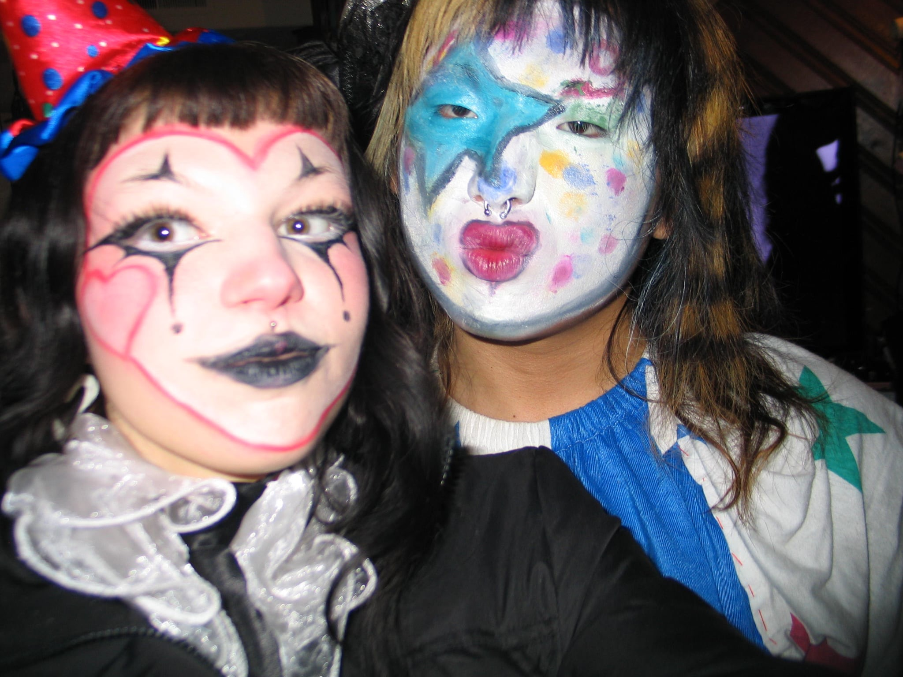
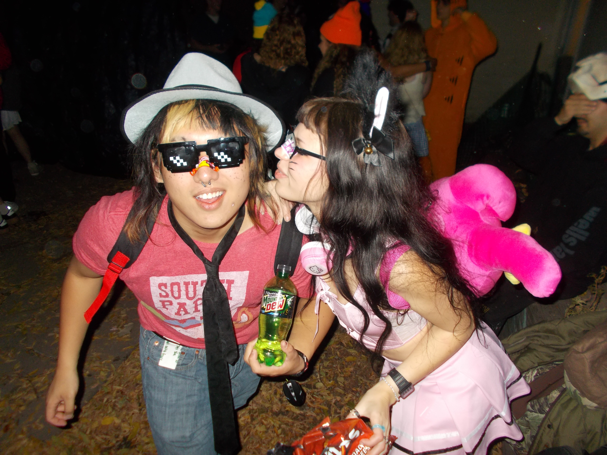
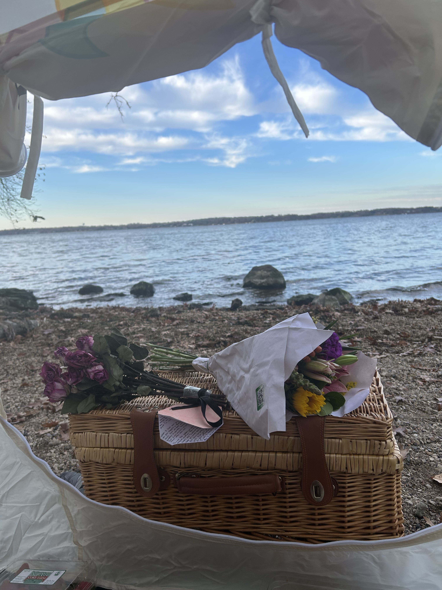
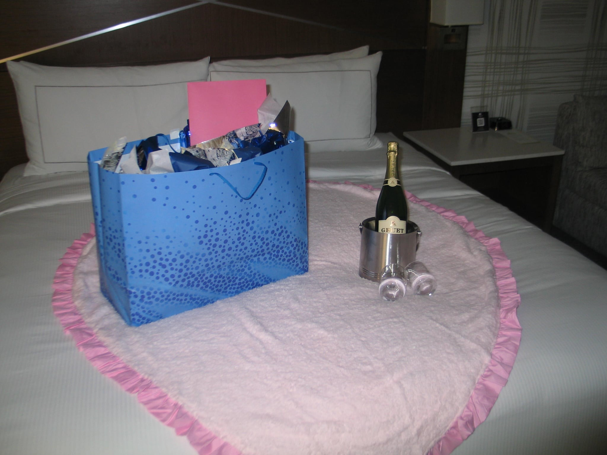

Happy birthday,
Gracie
To the love of my life <3
turn the page
Dear Gracie,
I made this website for your birthday to commemorate the big DOUBLE TWO! I love you so much and I am so ecstatic I can be a part of this huge milestone. Getting older is always a little taunting, but it also means that it’s just one more day spent with you. I have thought about all the beautiful things that I’ve lived through in my life, and you are the first thing that pops up in my head. You are the sweetest, funniest, and mesmerizing soul that’s ever walked on this Earth; even more jaw dropping than all the dinosaurs that have ever roamed.
2
My memories of you have been so fond, and it makes me happy that even the arguments we do get into are so trivial. I can’t wait to get into more stupid arguments and I hope you have such a Jurassic birthday!
All my love,
Oscar Cheng
3

images/photo-1.jpg
Our First Date
4

images/photo-2.jpg
CHICKEN JOCKEY
5

images/photo-3.jpg
First Photoshoot
6

images/photo-4.jpg
E-Girl and Discord Mod
7

images/photo-5.jpg
When I Asked You To Be My Girlfriend
8

images/photo-6.jpg
Valentines 3 Minutes Away
9
Happy 22nd My Love, I Love You So Much
Your Boog
10